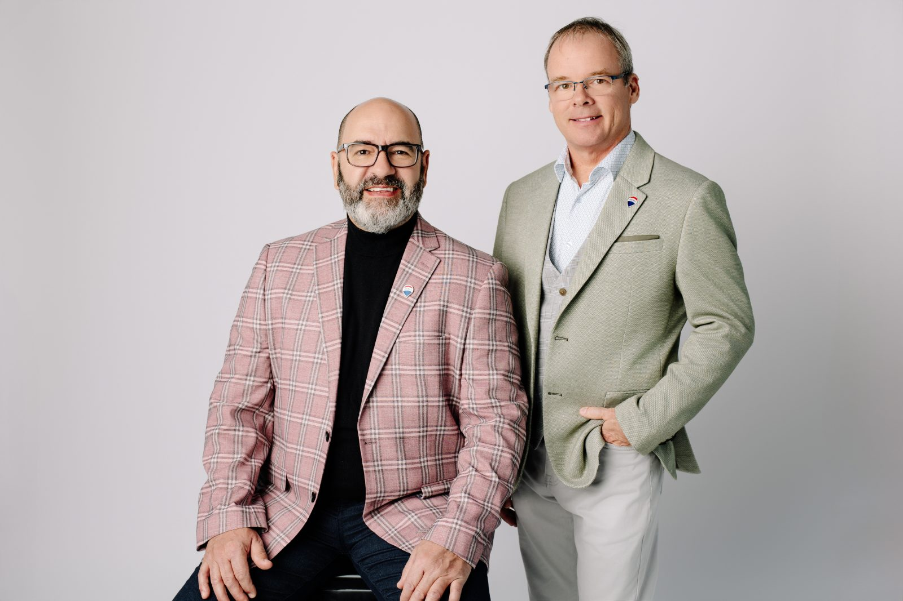
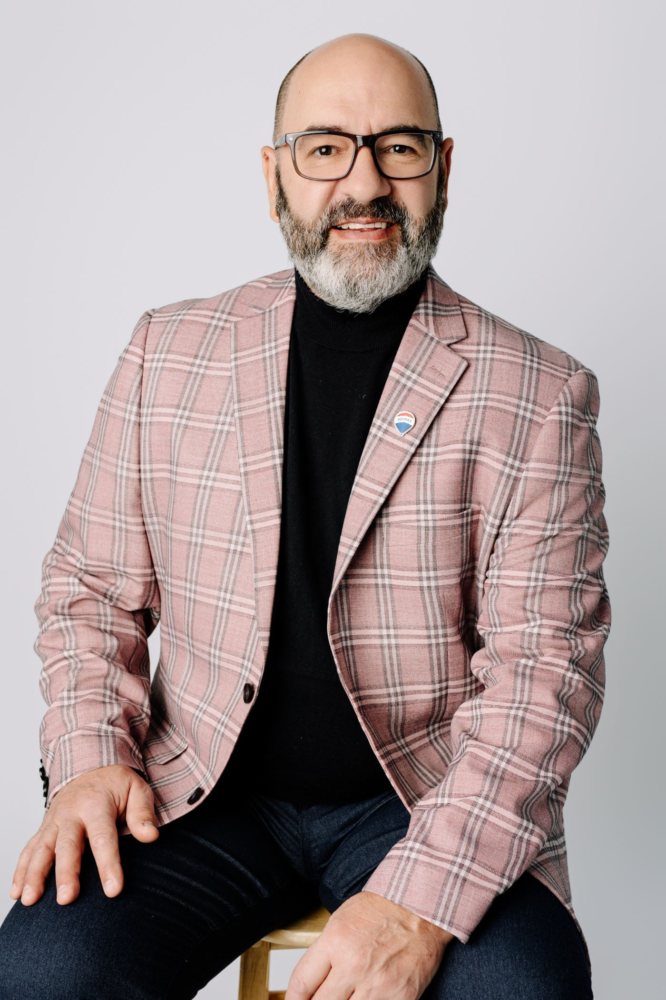

Courtier immobilier résidentiel · Permis OACIQ G8466 et D8971
Pat & Stef, courtiers immobiliers à Repentigny
Pat & Stef est le duo de courtiers immobiliers résidentiels formé de Patrick Chartier et de Stéphane Désilets, chez RE/MAX D'ici, à Repentigny, Terrebonne et Mascouche. Ils comptent plus de 10 ans d'expérience et plus de 500 transactions.

- Transactions conclues
- 500+
- D'expérience pour chacun des deux courtiers
- 10+ ans
- Un rapport statistique aux vendeurs, chaque semaine
- Lundi
- Secteurs
- Repentigny, Terrebonne, Mascouche
- Langue
- Français
- Bureau d'attache
- RE/MAX D'ici, Repentigny
- Reconnaissances
- Prestige 2025, Or 2024, Platine 2021 et 2020

Ville principale
Repentigny
Leur ville d'attache et le premier de leurs trois marchés.
Repentigny, Terrebonne, Mascouche
Trois villes de Lanaudière, sur la Rive-Nord, voisines mais très différentes. Voici comment Pat & Stef les lisent.
Repentigny, une ville familiale au bord du fleuve
Les secteurs établis y sont nombreux : Vieux-Repentigny, Valmont, Le Gardeur et les quartiers autour des boulevards Brien, Iberville et Lacombe. Les parcs de l'Île-Lebel, Saint-Laurent et Maurice-Richard, les Sentiers de la Presqu'île, l'autoroute 40, la gare de la ligne Mascouche et les commerces des Galeries Rive-Nord comptent parmi les atouts. Le projet Avantia, sur environ six millions de pieds carrés entre les boulevards Brien et Industriel, ajoutera progressivement logements, commerces et espaces verts.
Terrebonne, entre patrimoine et nouveaux quartiers
Plus de 126 000 habitants en 2026, des secteurs aussi variés que Terrebonne, Lachenaie et La Plaine, plus de 130 parcs et environ 100 kilomètres de pistes cyclables. Le Vieux-Terrebonne et l'Île-des-Moulins forment le versant patrimonial. Urbanova et la Croisée urbaine, qui prévoit environ 5 500 unités d'habitation près de l'Hôpital Pierre-Le Gardeur, dessinent l'avenir.
Mascouche, la nature à portée de quartier
Entre le parc du Grand-Coteau, le Domaine seigneurial et le Jardin Moore, les amateurs de plein air y trouvent leur compte. La montée Masson est l'un des axes commerciaux principaux. Le plan stratégique 2026-2030 prévoit notamment une nouvelle sortie de l'autoroute 640 vers l'avenue de l'Esplanade, annoncée pour 2027.
Une ville familiale au bord du fleuve, où se trouve leur bureau d'attache.
Lire le guide de Repentigny Aussi desservieMascouche
Aussi desservieMascoucheNature, tranquillité et vie de quartier, du parc du Grand-Coteau à la montée Masson.
Lire le guide Aussi desservieTerrebonnePatrimoine, nature et développement résidentiel, du Vieux-Terrebonne à Urbanova.
Lire le guideDeux courtiers, un seul interlocuteur à la fois
Un duo qui a bâti l'offre de service qu'il aurait voulu recevoir comme client.
Pat & Stef est un duo de courtiers immobiliers résidentiels : Patrick Chartier et Stéphane Désilets, chacun avec plus de 10 ans d'expérience.
Leur fierté commune, c'est de répondre directement et rapidement aux clients, que le message arrive par téléphone, par courriel ou par texto. Leur conviction tient en une phrase : les clients veulent parler au courtier. C'est pourquoi un courtier répond toujours aux demandes et que leurs lignes téléphoniques ne sont jamais transférées.
Ils aiment la proximité avec leurs clients et travaillent fort pour eux. Leur modèle d'affaires et leur offre de service ont été pensés pour répondre à ce qu'ils auraient eux-mêmes souhaité en tant qu'acheteurs, vendeurs, premiers acheteurs, investisseurs ou personnes retraitées.
Leur mise en marché est professionnelle : photos, vidéos et images de drone sont réalisées par leur propre photographe. Chaque lundi, les clients vendeurs reçoivent un rapport statistique pour suivre l'évolution du marché.
Leur présence à Repentigny, Terrebonne et Mascouche est d'abord une affaire d'appartenance. Ils y habitent avec leur famille, partagent le quotidien de leurs concitoyens et accompagnent une grande partie de leur clientèle dans ces municipalités depuis plusieurs années. Ils connaissent donc ces villes bien au-delà de leur marché : leurs quartiers, leurs services, leurs écoles, leurs commerces et leurs particularités.
Ils accompagnent des acheteurs et des vendeurs dans l'unifamiliale, le condo et le plex. Les premiers acheteurs, les 55 ans et plus et les successions font partie de leur quotidien. Leurs plus de 500 transactions et leurs reconnaissances RE/MAX (Prestige 2025, Or 2024, Platine 2021 et 2020) le confirment.
Trois pratiques qui les distinguent
Des choix de fonctionnement que leurs clients peuvent constater.
- Un courtier
Un courtier répond, toujours
Leurs lignes ne sont jamais transférées : c'est un courtier qui prend chaque appel.
- Drone
Leur propre photographe
Photos, vidéos et drone font partie de leur mise en marché professionnelle.
- Lundi
Un rapport statistique chaque semaine
Les clients vendeurs reçoivent leurs statistiques tous les lundis.
Vendre ou acheter avec nous
Acheteurs, vendeurs, premiers acheteurs, investisseurs et retraités.
Vendeurs
Une stratégie de prix, puis une mise en marché professionnelle.
- Évaluation gratuite, avec étude des propriétés comparables
- Discussion de la stratégie de prix
- Photos, vidéos et drone par leur photographe
- Rapport statistique chaque lundi
- Réseau d'entrepreneurs et de notaires
Acheteurs
Un parcours expliqué étape par étape, de la préqualification au notaire.
- Contrat de courtage achat, puis préqualification bancaire
- Analyse du budget et des critères
- Visites, promesse d'achat et inspection
- Suivi des conditions jusqu'à l'acte notarié
- Unifamiliales, condos, plex, 55+ et successions
Nos clients, dans leurs mots
Trois clients de Mascouche, de Repentigny et de Terrebonne.
C’est une personne qui est très compétente , disponible, qui est à l’écoute des clients! Très bon service!
Merci à l’équipe PAT ET STEF!!J’ai reçu un excellent service de Stéphane et Patrick.
Ils ont été impeccables du début à la fin. Toujours disponibles pour répondre à mes questions, fiables et entièrement dévoués à leurs clients.
Leur professionnalisme et leur souci ont rendu la vente de ma demeure simple et agréable.
Je les recommande sans hésitation à 100 % pour une transaction sans tracas !
Merci encore pour votre excellent travail.Nous tenons à exprimer notre sincère gratitude à nos deux courtiers immobiliers pour leur excellent travail tout au long de notre projet. Leur professionnalisme, leur disponibilité, leurs précieux conseils et leur dévouement ont grandement contribué à rendre cette expérience agréable et sans souci.
Merci pour votre accompagnement exceptionnel, votre écoute et votre engagement. Ce fut un réel plaisir de travailler avec vous, et nous n’hésiterons pas à vous recommander à notre entourage.
Encore merci pour tout !
Pat & Stef en images
Le duo, puis un portrait.


Trois questions de clients
Chaque réponse tient seule, sans le reste de la page.
Est-ce le bon moment de vendre ma propriété à Repentigny, Terrebonne ou Mascouche ?
Selon Pat & Stef, courtiers chez RE/MAX D'ici, il vaut mieux vendre plus tôt que plus tard. Le marché a changé : l'inventaire de propriétés à vendre va augmenter avec le temps, la compétition sera donc plus grande et les délais plus longs.
Comment Pat & Stef établissent-ils la valeur d'une propriété ?
Grâce à une étude des propriétés comparables et à certains programmes auxquels ils ont accès, Patrick Chartier et Stéphane Désilets présentent un ordre de grandeur de la valeur de la propriété. Ils discutent ensuite de la stratégie de prix à adopter.
Quelles sont les démarches pour acheter une propriété avec Pat & Stef ?
Le courtier signe d'abord un contrat de courtage achat avec l'acheteur, puis ils obtiennent ensemble une préqualification bancaire. Viennent ensuite l'analyse du budget et des critères, les visites, la promesse d'achat au besoin, l'inspection, la réalisation des conditions et la signature de l'acte notarié chez le notaire, avec le courtier.
Leurs propriétés à vendre
Les inscriptions de Pat & Stef sont affichées sur Centris, sous le profil de Patrick Chartier.
Quelle est la valeur de votre propriété ?
Écrivez à Pat & Stef pour une évaluation gratuite, ou appelez : un courtier vous répondra directement.
- Courtiers
- Pat & Stef, courtiers immobiliers
Patrick Chartier et Stéphane Désilets
Permis OACIQ G8466 et D8971 - Bureau
- RE/MAX D'ici
411, rue Notre-Dame, bureau 302
Repentigny (QC) J6A 2T2 - Téléphones
- Cellulaire : 514 298-6688
Bureau : 450 585-9500 - Courriel
- pchartier@remax-quebec.com